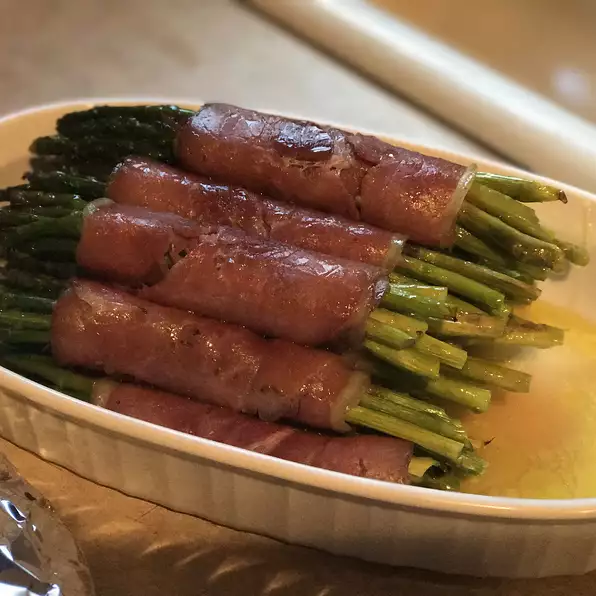

Asparagus Wrapped in Crisp Prosciutto

Description
Extremely easy and elegant appetizer. Asparagus spears are wrapped in a sheath of prosciutto, then baked until crispy. A great dish to make ahead, and bake just before serving.
Ingredients
- 1 tablespoon olive oil
- 16 spears fresh asparagus, trimmed
- 16 slices prosciutto
Steps
- Preheat the oven to 450 degrees F (220 degrees C). Line a baking sheet with aluminum foil, and coat with olive oil.
- Wrap one slice of prosciutto around each asparagus spear, starting at the bottom, and spiraling up to the tip. Place the wrapped spears on the prepared baking sheet.
- Bake for 5 minutes in the preheated oven. Remove, and shake the pan back and forth to roll the spears over. Return to the oven for another 5 minutes, or until asparagus is tender, and prosciutto is crisp. Serve immediately.